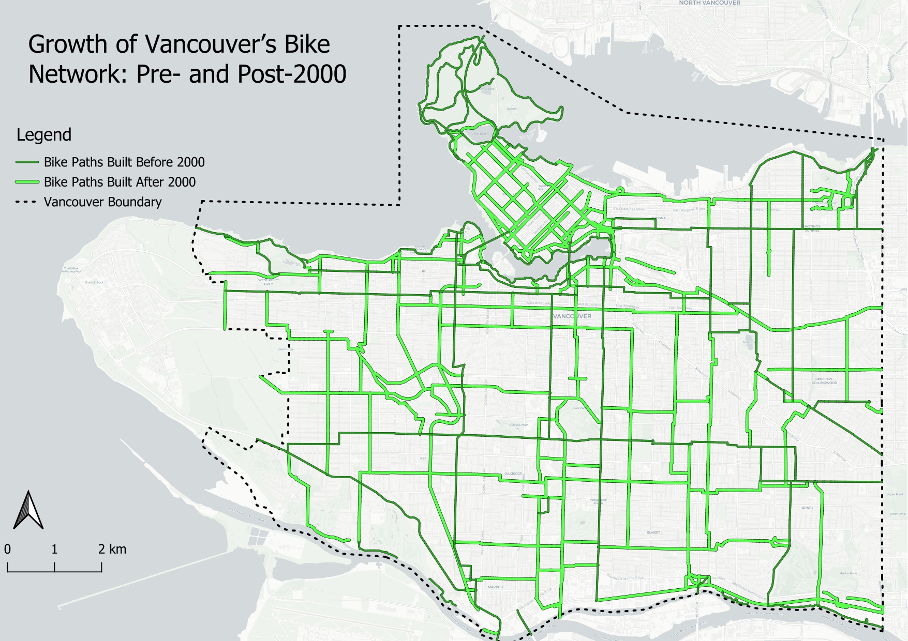

Vancouver Bike Paths

This map illustrates the development of bike infrastructure in Vancouver before and after the year 2000. Using QGIS, my workflow involved first gathering data from the Vancouver Open Data Portal. Using the bikeways dataset, I then queried and symbolized to split the installation date by the year 2000. My analysis shows that there is a visible increase in bike paths built after 2000. The map highlights the city's efforts to expand its cycling network.